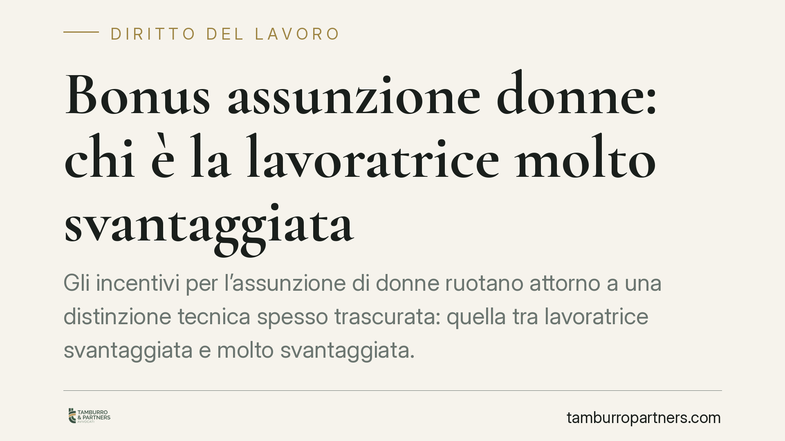

Bonus assunzione donne: chi è la lavoratrice "molto svantaggiata"
Gli incentivi per l'assunzione di donne ruotano attorno a una distinzione tecnica spesso trascurata: quella tra lavoratrice "svantaggiata" e "molto svantaggiata". Da questa qualifica dipende la durata dell'esonero contributivo. Per il datore di lavoro capire in quale categoria rientra la candidata non è un dettaglio formale, ma la premessa per non incorrere in un recupero contributivo con sanzioni e interessi.

Il quadro degli incentivi
Gli esoneri contributivi per l'assunzione di donne hanno una struttura consolidata nell'ordinamento italiano. La cornice di riferimento è l'art. 4, commi da 8 a 11, della Legge n. 92/2012, richiamata e finanziata di volta in volta dalle leggi di bilancio annuali, che ne definiscono importi, durata e limiti di spesa.
È importante una precisazione di metodo: la misura di dettaglio applicabile in un dato anno dipende dalla legge di bilancio e dalle circolari attuative INPS in vigore. Qualunque intervento normativo più recente va verificato nel testo pubblicato in Gazzetta Ufficiale prima di orientare una scelta assuntiva. In questo contributo ci concentriamo sui presupposti stabili, cioè sulla definizione delle categorie di lavoratrici agevolabili.
Svantaggiata e molto svantaggiata: due categorie, due durate
Le nozioni operative provengono dal diritto dell'Unione, in particolare dall'art. 2 del Regolamento UE n. 651/2014.
È "lavoratrice svantaggiata" (art. 2, punto 4) chi, in sintesi, non ha un impiego regolarmente retribuito da almeno sei mesi, oppure rientra in specifiche condizioni di età, titolo di studio o settore di attività, oppure risiede in aree geografiche con divario occupazionale di genere. Per questa categoria l'agevolazione ha, di regola, durata fino a dodici mesi.
È "lavoratrice molto svantaggiata" (art. 2, punto 99) chi si trova senza impiego regolarmente retribuito da periodi più lunghi (in genere ventiquattro mesi, o dodici mesi se ricorrono ulteriori requisiti). In questo caso la durata dell'agevolazione può estendersi fino a ventiquattro mesi.
La differenza è quindi netta e ha un impatto economico diretto: la corretta collocazione della lavoratrice raddoppia o dimezza il periodo di beneficio.
Cosa significa "impiego regolarmente retribuito"
Il concetto di "impiego regolarmente retribuito" è il perno della qualificazione. Non basta l'assenza formale di un contratto: rileva l'assenza di un lavoro effettivamente e regolarmente remunerato nel periodo considerato. La ricostruzione della storia lavorativa della candidata è pertanto decisiva.
L'onere di dimostrare la sussistenza dei requisiti grava sul datore di lavoro. In sede di controllo, l'INPS può chiedere la documentazione a supporto della qualifica dichiarata: se questa manca o non è coerente, il beneficio può essere revocato.
L'incremento occupazionale netto
Questi incentivi sono di norma subordinati alla realizzazione di un incremento occupazionale netto, secondo il criterio previsto dall'art. 31 del D.Lgs. n. 150/2015. In pratica, il numero dei dipendenti dopo l'assunzione deve risultare superiore alla media del periodo precedente, calcolata secondo le regole di legge. Se l'incremento non si verifica, il presupposto dell'agevolazione viene meno.
Implicazioni pratiche per il datore
Per il datore di lavoro il messaggio operativo è chiaro: l'esonero non è automatico. La qualifica della lavoratrice, la corretta lettura della sua storia contributiva e la verifica dell'incremento occupazionale netto sono condizioni che, se disattese, espongono al recupero delle somme fruite, maggiorate di sanzioni e interessi.
Il rischio non è teorico. Un errore nella collocazione tra "svantaggiata" e "molto svantaggiata", o una documentazione incompleta, può trasformare un beneficio in una passività a distanza di mesi.
Cosa fare in concreto
- Ricostruire la storia lavorativa della candidata prima dell'assunzione, acquisendo l'estratto contributivo e ogni elemento utile a documentare l'assenza di impiego regolarmente retribuito.
- Individuare con precisione la categoria (svantaggiata o molto svantaggiata) e verificarne i requisiti rispetto all'art. 2, punti 4 e 99, del Reg. UE n. 651/2014.
- Distinguere la durata applicabile (fino a dodici o fino a ventiquattro mesi) e riportarla correttamente nella gestione contributiva.
- Verificare l'incremento occupazionale netto ai sensi dell'art. 31 del D.Lgs. n. 150/2015, documentando il calcolo.
- Conservare la documentazione a supporto della qualifica per l'intero periodo di fruizione e oltre, in vista di eventuali controlli INPS.
È opportuno formalizzare la verifica dei requisiti prima della stipula del contratto, non dopo, così da poter correggere l'impostazione senza conseguenze.
Disclaimer
Contributo informativo a cura di Tamburro & Partners - Avv. Giuseppe Tamburro. Non costituisce parere legale.
Ogni storia di lavoro ha i suoi tempi.
Se gestisci HR e vuoi un confronto su contenzioso, ispezioni o licenziamenti, scrivi allo studio. Ti rispondiamo entro un giorno lavorativo.